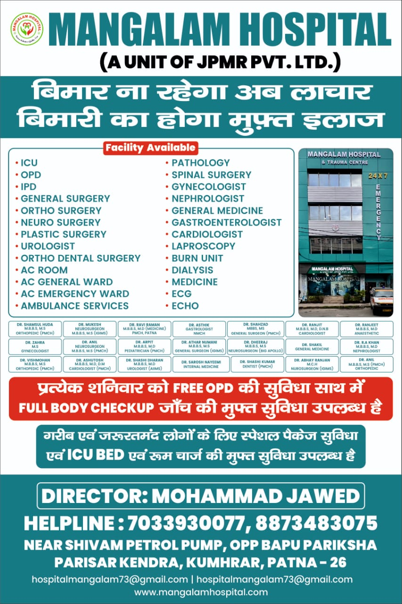

Our Infrastructure
Hospital Facilities



Dedicated to bringing world-class, accessible healthcare to the people of Patna.
At Mangalam Hospital & Trauma Centre, we believe that accessible healthcare is a fundamental right. Driven by the visionary leadership of our Director, Mohammad Jawed, we strive to bring world-class medical facilities to the people of Patna.
We provide evidence-based treatments, a warm and healing ambiance, and highly specialized healthcare services. Our mission is uniquely focused on ensuring that even the most poor and needy patients receive the utmost care without financial ruin.
To provide high-quality, evidence-based medical treatments while ensuring healthcare is accessible to all, especially the poor and needy.
To be the most trusted healthcare institution in Bihar, known for clinical excellence, compassionate care, and ethical practices.
Compassion, Integrity, Excellence, Patient-Centricity, and Accessibility.
"When we laid the foundation for Mangalam Hospital & Trauma Centre, we had one clear goal: no one should be denied life-saving medical treatment because of financial constraints. Our motto, 'बिमार ना रहेगा अब लाचार, बिमारी का होगा मुफ़्त इलाज' is not just a slogan; it is the guiding principle of everything we do here."
"We have assembled a team of the finest doctors, equipped our facility with state-of-the-art technology, and created an environment of healing. We are particularly proud of our Free Saturday Clinic and our commitment to providing free ICU beds to those who truly need them. Your health and trust are our greatest responsibilities."

Years of Excellence
Expert Doctors
Emergency Care
Happy Patients